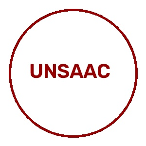

UNIVERSIDAD NACIONAL DE SAN ANTONIO ABAD DEL CUSCO
FACULTAD DE INGENIERÍA ELÉCTRICA, ELECTRÓNICA, INFORMÁTICA Y MECÁNICA
ESCUELA PROFESIONAL DE INGENIERÍA INFORMÁTICA Y DE SISTEMAS

Docente Responsable
CCACYAHUILLCA BEJAR, HANS HARLEY
Autores / Desarrolladores
SUPA CUSIPAUCAR, Yeferson • 220553
VILLAVICENCIO SEGUIL, Edu Piero • 220555
Resumen Ejecutivo
El presente informe formaliza el desarrollo técnico, matemático y computacional de la primera entrega correspondiente al preprocesamiento y auditoría de calidad de un dataset de imágenes foliares en el cultivo de papa (Solanum tuberosum). La investigación fitosanitaria regional del Cusco exige soluciones automatizadas capaces de clasificar oportunamente tres estados críticos: Tizón Temprano (Early Blight), Tizón Tardío (Late Blight) y Hojas Sanas (Healthy).
Frente a condiciones adversas de captura en campo abierto (in-the-wild), se construyó un pipeline modular en Python/OpenCV que integra: auditoría de desenfoque mediante la varianza del operador Laplaciano, filtrado bilateral no lineal para atenuación de ruido de sensor con estricta conservación de bordes, realce local CLAHE en el espacio perceptual CIE-Lab, redimensionamiento isotrópico mediante letterbox a $256 \times 256$, y particionado estratificado (70% Train, 15% Val, 15% Test) con data augmentation restringido únicamente a entrenamiento. Los resultados garantizan representaciones numéricas no sesgadas e invariantes en escala para el posterior modelado profundo.
1. Introducción y Contexto Regional
La papa es el cultivo agrícola más trascendente de la región andina del Cusco. La producción se enfrenta anualmente al ataque severo de patógenos criptogámicos de rápida propagación:
- Tizón Temprano (Early Blight): Producido por el hongo Alternaria solani. Comienza con manchas necróticas pardas que forman círculos concéntricos distintivos (anillos en diana).
- Tizón Tardío (Late Blight): Ocasionado por el oomiceto Phytophthora infestans. Agente devastador que provoca lesiones acuosas verde oscuras a negras que necrosan el tejido en cuestión de días.
- Follaje Sano (Healthy): Hojas sin afectación patológica con variabilidad morfológica y tonal natural.
2. Justificación del Dataset Desafiante
A diferencia de entornos controlados de laboratorio con iluminación de estudio y fondos planos, este dataset presenta retos reales indispensables para validar sistemas de visión artificial:
- Condiciones Fotométricas Extremas: Variación de luz solar cenital directa, sombras arrojadas y reflejos especulares de la cutícula cerosa de la hoja.
- Fondos Complejos No Homogéneos: Suelo agrícola, rastrojos, tallos y superposición intrincada de follaje vegetal.
- Gran Similitud Inter-Clase Temprana: En etapas incipientes, las micro-lesiones necróticas de tizón temprano y tardío presentan diámetros milimétricos y tonalidades marrones muy similares antes de que aparezcan anillos concéntricos maduros.
- Variabilidad de Escala y Perspectiva: Tomas capturadas a diferentes distancias focales y orientaciones manuales.
3. Fundamentación Matemática del Pipeline
3.1. Auditoría de Calidad y Nitidez (Operador Laplaciano)
Para detectar capturas desenfocadas o degradadas por vibración del sensor, se calcula la segunda derivada espacial sobre la imagen en escala de grises:
3.2. Reducción de Ruido con Filtrado Bilateral
El filtro bilateral combina cercanía espacial y similitud radiométrica para no suavizar los bordes finos de las manchas patológicas:
3.3. Realce Local CLAHE en Espacio CIE-Lab
Se convierte de RGB al espacio ortogonal CIE-Lab para desacoplar la luminosidad acromática ($L^*$) de los ejes cromáticos ($a^*, b^*$). CLAHE se aplica exclusivamente a $L^*$ con teselas de $8 \times 8$ y límite de contraste (\textit{clip limit}) de $2.5$:
3.4. Estandarización Espacial con Letterbox
Para alimentar redes convolucionales sin estirar la morfología foliar, se aplica reescalado isotrópico a $256 \times 256$ con padding simétrico:
4. Resultados Experimentales y Visualización

Distribución Cuantitativa del Dataset
| Clase Patológica | Total Crudo | Train (Aumentado) | Val | Test | Total Procesado |
|---|---|---|---|---|---|
| Tizón Temprano (Early Blight) | 10 | 14 | 1 | 2 | 17 |
| Follaje Sano (Healthy) | 10 | 14 | 1 | 2 | 17 |
| Tizón Tardío (Late Blight) | 10 | 14 | 1 | 2 | 17 |
| Total Acumulado | 30 | 42 | 3 | 6 | 51 |

5. Guía de Sustentación Oral para los Integrantes
6. Conclusiones y Segunda Entrega
- Se implementó con éxito una arquitectura de preprocesamiento modular, reproducible y fundamentada en principios rigurosos de visión artificial.
- La preservación de bordes mediante filtro bilateral y el realce de contraste adaptativo en CIE-Lab aíslan eficazmente las lesiones foliares sin alterar la clorofila de la hoja.
- Próximos Pasos (Segunda Entrega): Extracción de descriptores de textura (GLCM, Haralick) y entrenamiento de modelos convolucionales de clasificación (MobileNetV3 y ResNet18) orientados a inferencia liviana en campo.